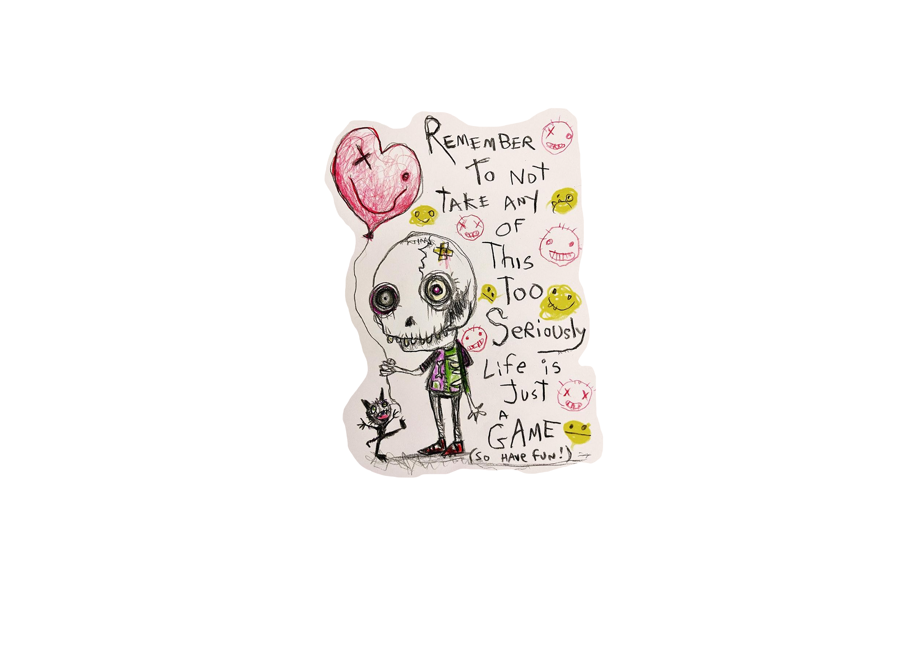

The inevitability of our own, as well as our planets, mortality is not to depress or induce mania in those who discuss it.
Personally, I always feel relieved by the recycling of atoms that occurs throughout the universe, so I know, at least at a micrscopic level, my composition will be repurposed.
This distant, but determined fate does provide perspective as to how we want to experience our lives. I hope that if you do have cortex activity for a small amount of time following the cessation of my heartbeat, I view memories of me totally engulfed in the moment.
